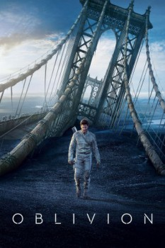

Country:United States, 124 minutes
Spoken languages:English
Genres:Action, Sci-Fi, Adventure, Mystery
Director(s):Joseph Kosinski
Writer(s):Karl Gajdusek, Michael Arndt
Video Codec:Unknown
Number: 2815

Certification:PG-13
Storyline:
Jack Harper is one of the last few drone repairmen stationed on Earth. Part of a massive operation to extract vital resources after decades of war with a terrifying threat known as the Scavs, Jack’s mission is nearly complete. His existence is brought crashing down when he rescues a beautiful stranger from a downed spacecraft. Her arrival triggers a chain of events that forces him to question everything he knows and puts the fate of humanity in his hands.
Cast:
Tom Cruise (as Jack), Morgan Freeman (as Beech), Olga Kurylenko (as Julia), Andrea Riseborough (as Victoria), Nikolaj Coster-Waldau (as Sykes)
Medium: Media file,
Location: D:\Oblivion\Oblivion.2013.mp4
Loaned: No
Aspect ratio: Unknown